1¢ Franklin Issue of 1851-1857, PLATE 4 Plate 4 Introduction and Characteristics |
|
| Plate 4 Can Drive One to Insanity
Plate 4 changed it's appearance as many plating marks faded away due to plate wear, and new plating marks developed over the life of the plate. One of the most annoying aspects of trying to identify Plate 4 positions is the appearance and disappearance of these plating marks. |
|
| Plate 4 Introduction
On first inspection, Plate 4 seems simple, but the closer one looks, the harder it becomes. A confused mass of plating marks that seem to never quite match the published diagrams, six reliefs instead of the familiar three from the previous plates 1 thru 3, plating marks that disappear and new ones that show up later in the plates life, all this occurring in about a years worth of printing. The reconstruction of plate 4 will be difficult, so much so, that no sane person who is familiar with the philatelist's plating art and platers trick's would attempt to unravel. Fortunately, sanity has never been the platers primary concern. The quest to decipher this seemingly cryptographic nightmare has enthralled some of the greatest platers and philatelist's for well over a century now. |
|
| Plate 4 Reliefs
Plate 4 is the first plate made with spacing large enough to introduce perforations in the vertical and horizontal spacing between stamps. It is also the first plate with six reliefs as opposed to the first 3 plates with 3 reliefs. In order to do this, a new transfer roll was made which philatelists simply call Transfer Roll No. 2. The old three relief roller (Called No.1) was set aside never to be used again. It is essential for the plating student to be able to identify the relief. This sometimes can be difficult on poorly centered perforated stamps with the designs cutoff on either the top or bottoms. We call the six reliefs "A," "B," "C," "D," "E, " and "F." |
|
| "A" Relief The "A" relief is the only one of the six reliefs which has the design complete at the top. This feature makes the identification of stamps from the top row very simple. All top row stamps from Plate 4 are Type II. Guide dots were placed above the upper right ornaments of all 20 positions in the top row. Extra dots were also included on 10L and 10R4. |
"A" Relief Few, if any, top row stamps show much of the bottom design. Very little of the left scroll remains. The left plume is gone all together. The right plume also missing but not to the extent of the left plume. It should be noted that the top curved line of the right plume extends further down (or is more complete) than the "B" and "C" relief. This is a helpful plating feature if the top ornaments of a stamp in question are cut off. |
| 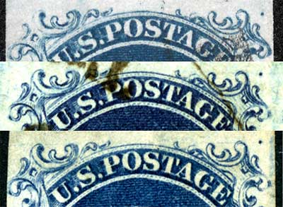 | 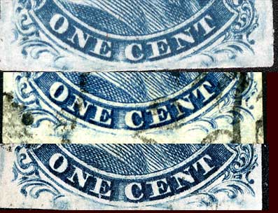 |
|
The "B" relief was used only for 20 positions on the plate, the entire 2nd horizontal row. This relief on the roller was a true example of Type IIIA. (The top line broken) "B" reliefs stamps can as a general rule be quickly identified by the upper left ornament which is more complete than on "C," "D," and "E " reliefs. |
Weak transfers and plate finishing under several positions of "B" reliefs eliminated parts of the bottom curved line and changed the type on such positions to Type III. Positions 15L4, 19L4 and 11R4 are Type III. |
| 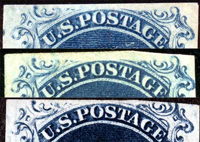 | 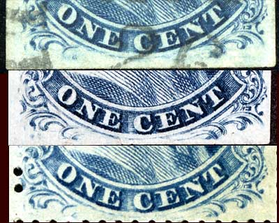 |
|
The "C" relief stamps have a very small break in the top line, just above the O and S of POSTAGE, consequently the majority of "C" reliefs stamps can be readily identified by this feature. Ornaments S and Z are less complete than the "A" and "B" reliefs. |
It should be noted that the top curved line of the right plume does not extend down as far as the "A" and "B" relief. (and thus is the least complete or shortest in it's extention downward) This is a helpful plating feature if the top ornaments of a stamp in question are cut off. |
| 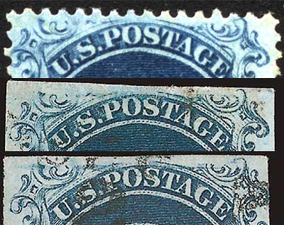 | 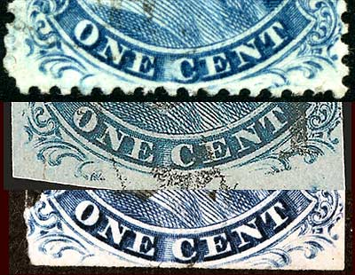 |
|
Regarding Relief "D," used for the 4th and 8th rows, 40 positions on Plate 4. The top curved line is broken to a much larger extent. On close examination, one can see two ragged lines, one extending from the break in the line at the left to a point over the "O," the other from the break over the "T" at right, to a point over the right part of the "S." These ragged lines are not part of the broken top line but are what Ashbrook and Neinken called "burrs" of color. |
In the lower part of the stamps coming from the "D" Relief of Plate 4, one will note that the left ball of the left scroll is becoming more complete, or is showing more detail than the previous reliefs A, B and C. This is also true for the right plume. The upper curved line of the plume now extends down further than the previous reliefs A, B and C and some traces of detail of the plume ball itself is starting to appear. |
| 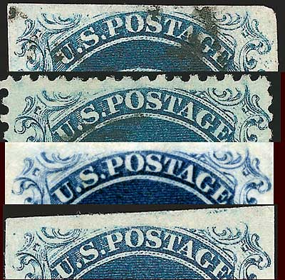 | 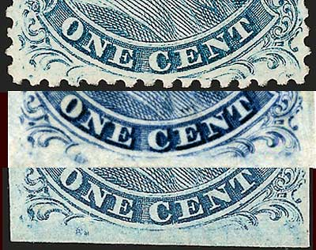 |
|
The "E" reliefs in the 5th and 9th horizontal row, 40 positions, gave us stamps of three different design types, Type Ic, III and IIIa. Of the 40 positions, 7 are the Type Ic, viz., 47L 49L, 81L, 49R, 81R, 82R, and 89R4. The top curved line is typically broken the widest of the relief types and no evidence of Ornaments S and Z are visible. |
"E" relief stamps can be found with the lower curved line complete or broken to various degrees. The right plume is nearly complete and appears strong except for the lower curved line of the plume, as if the bottom curved line was simply cut off. The completeness of the left plume is the defining feature of the Type Ic. The left plume and left scroll must be complete to be a Type Ic. |
| 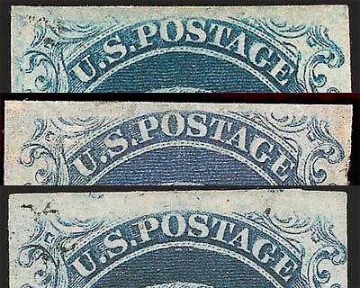 | 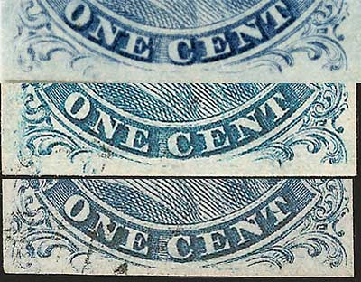 |
|
All 40 positions of "F" relief stamps from the 6th and 10th row have a small plate flaw under the U of U.S. as indicated by the red arrows in the image below. The "F" relief stamps from this plate provide collectors with four different types: Ia, Ic, III and IIIa. It should be noted that because of the short entry on to the plate of sixth row postions and complete entry of the bottom part of the design of 10th row positions, the stamps of 6th and 10th row appear totally different. But, because of the relief flaw under the U of U.S. we can prove that 6th and 10th row stamps come from the same "F" relief roller position. Modern platers of the the One Cent simply differentiate the rows by adding either a 6 or 10 after the F. Hence F6 or F10. |
The top curved line is typically broken and shows similar "burrs" not unlike "D" relief stamps. Ornaments S and Z are missing and the other top ornaments are short. "F" reliefs stamps from the sixth row have guide dots in the lower right plume except for 60L4 and 60R4. This is a helpful plating feature when trying to determine if the patient is a 6th row or 10th row stamp. The right lower plume is similar to the E relief, and the left plume can be found in various stages of completeness. |
| 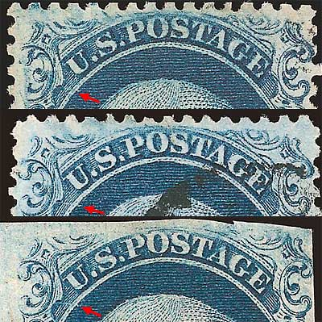 | 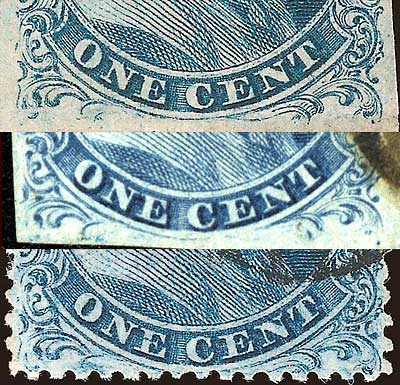 |
|
The top curved line is typically broken and shows similar "burrs" not unlike "D" relief stamps. Ornaments S and Z are missing and the other top ornaments are short. |
All "F10" relief stamps bottom curved lines are complete and unbroken due to being fully transffered to the plate at the bottom. The lower scrolls and scroll balls are also complete. 18 positions of the 20 bottom row positions produced Type Ia stamps. Position 96R4 and 91R4 is a Type Ic because its lower left and right plumes are incomplete. |
| 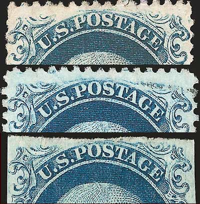 | 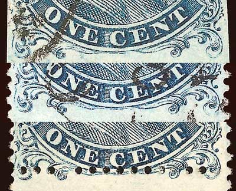 |
|
The table below shows approximately the distribution of the various types produced by Plate 4. It is impossible to give the exact number of each, because in the early life of the plate, certain positions were Type IIIa, (showing only a break in the top line, but with the bottom line intact). The wear of the plate eventually caused the faint bottom line to disappear, converting the position, that in early impressions produced IIIa stamps, to one in later life of the plate, that produced Type III stamps. |
|
| Types | Quantity |
| Type Ia Type Ic Type Ic-IIIa Type II Type III Type IIIa Type IIIa or III |
18 8+ 2- 20 37 88 27 |
|
The lone double transfer found on Plate 4 is position 10R4, a type II stamp. 10R4, according to Ashbrook and Neinken is a very rare stamp, in fact, it ranks among the rarest of double transfers of the one cent 1851-57 series. Siegel power search shows 6 perforated examples sold since 1988. Of those 6, 2 are pairs on cover. |
The spacing between the left and right pane of plate 4 is the widest of all 1¢ plates. The centerline is approximately 5mm from the stamps of the left pane and 6mm from the stamps of the right pane. |
|
Plate 4 exhibits numerous plate scratches of various intensity and length. Early, sharp impressions, reveal more fine plate scratches than later impressions, no doubt due to plate wear and the polishing action of the printing process. |
Stamps from Plate 4 showing part of the imprint are rare and difficult to find. The plate imprint is found on the left and right sides of the left and right panes. The imprint extends the height of 4 rows of stamps. Imprints would therefore be found on 31L4, 41L4, 51L4 and 61L4 for the left pane and 40R4, 50R4, 60R4 and 70R4 for the right pane. |
|
While being driven insane plating Plate 4 patients, it is always helpful to have relief diagrams handy to mark down notes and suspected plating marks. The archivist has created his own and now you can use them as well. Click the image to the right and download your own PDF format, printer friendly relief mats, to update your copy of Neinken and help us complete the Archive. |
|
|
I can be reached at: nerdman@ix.netcom.com Update 5.2.2009 |
|